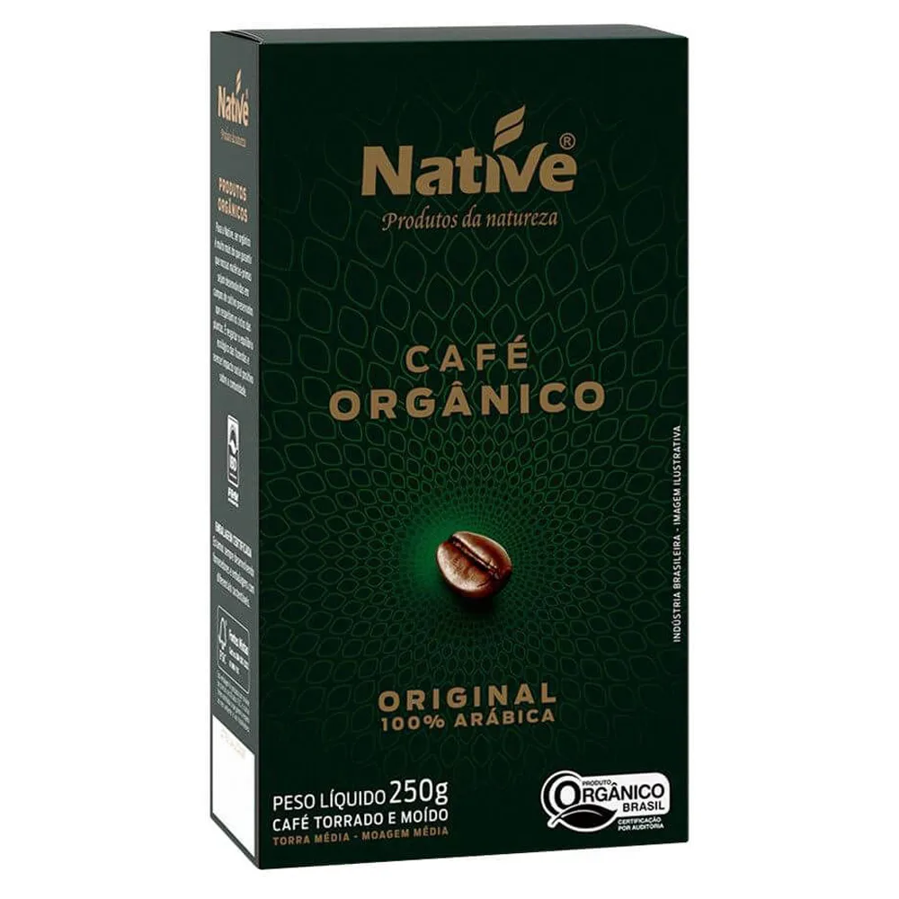

Native One Orgânico Especial – Grãos 250g
Origem: Cerrado Mineiro
Tipo: 100% Arábica, orgânico certificado
Torra: Média
Intensidade: 6/10
Peso: 250g
🛒 Comprar Café
Origem: Cerrado Mineiro
Tipo: 100% Arábica, orgânico certificado
Torra: Média
Intensidade: 6/10
Peso: 250g
🛒 Comprar CaféO Native One Orgânico Especial é aquele café que entra na prateleira levantando duas bandeiras ao mesmo tempo: qualidade e sustentabilidade. Orgânico certificado, rastreabilidade, Cerrado Mineiro… tudo isso em uma embalagem só.
Para quem já está cansado de ver o termo “orgânico” sendo usado quase como adereço de marketing, esse aqui surpreende positivamente. Não é só um café “correto” do ponto de vista ambiental — ele também se sustenta na xícara.
No coado (filtro tradicional ou V60): É onde ele se mostra mais confortável. O sabor é limpo, com um toque de doçura natural e notas que lembram castanhas e um leve chocolate. A acidez é suave e o corpo é médio, o que faz dele um ótimo café de todo dia.
No espresso: Funciona, mas não é tão explosivo quanto outros cafés mais intensos. O perfil fica mais contido, com menos complexidade, mas ainda assim agradável. Ideal para quem prefere espressos mais suaves, sem “pancada” de amargor.
Na prensa francesa: Ganha um pouco mais de corpo e textura, mas continua mantendo a suavidade. É uma boa escolha para um café da manhã tranquilo, sem sobresaltos.
Se você está esperando um café super marcante, ultra frutado ou com perfil muito exótico, provavelmente vai achar o Native “educado demais”. Ele é mais sobre equilíbrio do que sobre intensidade.
Por outro lado, justamente por ser mais suave, ele é um excelente candidato a café “fixo” da casa — aquele que você pode tomar duas ou três vezes por dia sem cansar, nem sobrecarregar o paladar.
O Native One Orgânico Especial é aquele café que mostra que “orgânico” não precisa ser sinônimo de café sem graça. Ele entrega um sabor honesto, equilibrado e fácil de beber, com o bônus de você saber que tem um impacto ambiental menor na xícara.
Não vai disputar com cafés muito complexos em termos de camadas aromáticas, mas essa nem é a proposta. Ele quer ser correto, agradável e repetível — e consegue.
Talvez uma versão com torra um pouco mais clara, destacando mais a acidez e algumas notas aromáticas, agradasse ainda mais quem vem do mundo dos cafés especiais. Mas aí já é quase outro produto.
"8/10 — Um orgânico competente, equilibrado e muito bebível. Ótima porta de entrada para quem quer alinhar xícara, consciência e rotina."
Se você estava procurando um café que faça sentido tanto para o paladar quanto para o planeta, o Native One é uma escolha bem tranquila de defender.